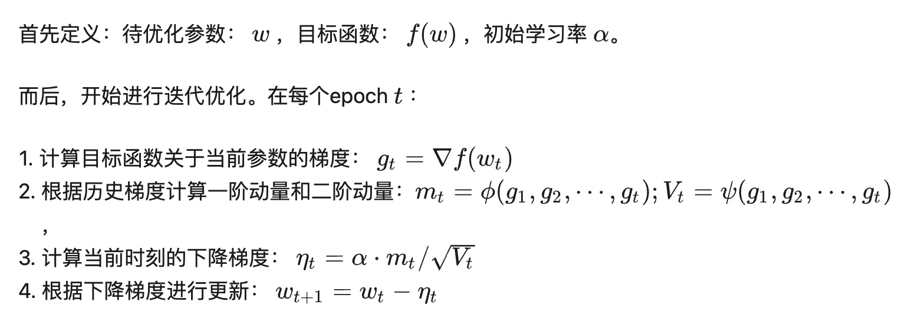
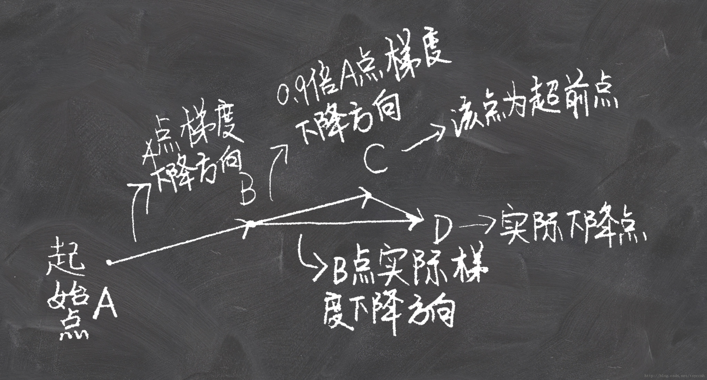

基础流程

1 SGD
没有动量概念：
\( \begin{align} m_t = g_t; V_t = I ^ 2\\ \eta _t = \alpha · g_t \end{align}\)
方法最简单，但下降速度慢，可能会导致震荡，或停留在局部最优点。
2 SGD-M
带有一阶动量概念的SGD：梯度不仅由当前决定，还由过去时刻的梯度决定。
\( \begin{align} m_t = \beta _1 · m_{t - 1} + (1 - \beta _1 ) · g_t \end{align}\)
其中\(\beta _1\)通常由经验设置为0.9。
图示：
但仍存在局部最优的问题。
3 NAG
SGD-M的改进，本质是考虑了二阶动量，因而更能加速收敛。
\( \begin{align} g_t = \nabla f (\omega _t - \alpha · m_{t - 1} / \sqrt {V_{t - 1}}) \end{align}\)
图示：

4 AdaGrad
真正使用二阶动量，即过去所有梯度的平方和。
\( \begin{align} V _t = \sum ^t _{\tau = 1} g ^ 2 _{\tau}\\ \eta _t = \alpha · m_t / \sqrt {V_t} \end{align}\)
二阶动量越大，学习率越低。学习率会单调递减至0，可能使训练过程提前结束。
5 AdaDelta
相较于考虑全局历史梯度、激进的AdaGrad，AdaDelta只考虑最近一段时间窗口下的历史梯度。
\( \begin{align} V _t = \beta _2 * V_{t - 1} + (1 - \beta _2)g ^2 _t \end{align}\)
可以避免训练过程提前结束。
6 Adam
由SGD-M和AdaDelta结合而成，同时考虑一阶动量和二阶动量。
\( \begin{align} m_t = \beta _1 · m_{t - 1} + (1 - \beta _1 ) · g_t\\ V _t = \beta _2 * V_{t - 1} + (1 - \beta _2)g ^2 _t \end{align}\)
7 Nadam
由Adam和NAG结合而成。
\( \begin{align} g_t = \nabla f (\omega _t - \alpha · m_{t - 1} / \sqrt {V_{t - 1}}) \\ m_t = \beta _1 · m_{t - 1} + (1 - \beta _1 ) · g_t\\ V _t = \beta _2 * V_{t - 1} + (1 - \beta _2)g ^2 _t \end{align}\)